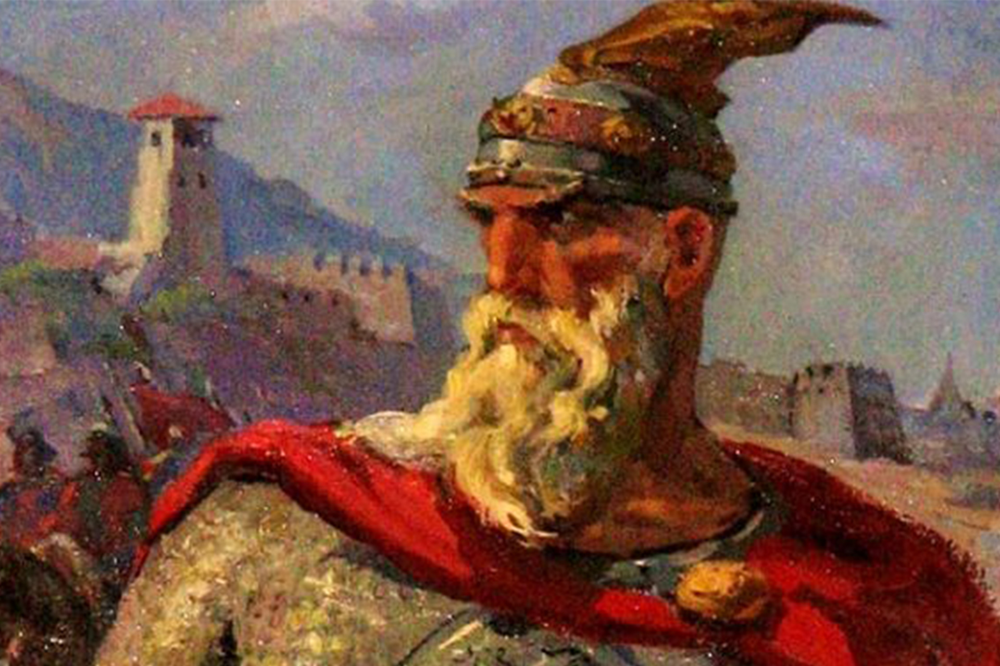
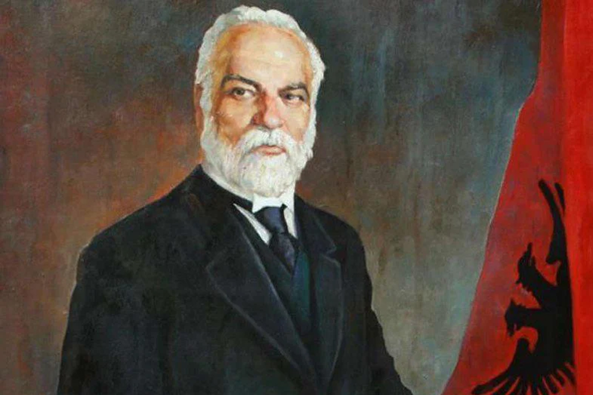

🇦🇱 28 Nëntori Dita e Pavarësisë (1912) — Ditë kombëtare që shënon shpalljen e Pavarësisë së Shqipërisë në Vlorë nga Ismail Qemali. — Po atë ditë, por në vitin 1443, Gjergj Kastrioti Skënderbeu ngriti flamurin në Krujë pas kthimit nga Stambolli – një simbol i rëndësishëm i rezistencës shqiptare.) Historia e shpalljes së pavarësisë: 28 Nëntori 1912 shënon një moment historik për popullin shqiptar: Shpallja e Pavarësisë së Shqipërisë. Kjo ndodhi në qytetin e Vlorës, ku një kuvend i përbërë nga përfaqësues të të gjitha krahinave shqiptare, i mbledhur në atë kohë nga Ismail Qemali, shpalli formalisht se Shqipëria ishte një shtet i pavarur. Ky moment erdhi pas shembjes së Perandorisë Osmane, e cila kishte sunduar mbi Shqipërinë për më shumë se 400 vjet, dhe pas një periudhe të trazuar politike dhe ushtarake në Ballkan. Shqipëria, si një komb i vjetër, kishte luftuar gjatë shekujve për pavarësinë, por kjo ishte një mundësi historike që erdhi pas Luftës Ballkanike dhe rritjes së tensioneve ndërkombëtare. Ismail Qemali dhe aktorët kryesorë: Ismail Qemali, një nga liderët kryesorë të lëvizjes për pavarësi, udhëhoqi Kuvendin e Vlorës dhe mori përgjegjësinë për shpalljen e aktit të pavarësisë. Ai u bë Kryeministri i parë i Shqipërisë. Përveç Ismail Qemalit, në këtë ngjarje morën pjesë edhe shumë figura të tjera të rëndësishme si Isuf Luzaj, Pashko Vasa, Luigj Gurakuqi, dhe shumë intelektualë dhe patriotë të tjerë shqiptarë. Shumë nga këta ishin të ftuar për të diskutuar dhe aprovuar shpalljen e pavarësisë, dhe më pas për të formuar institucionet e para shtetërore. Dita e parë e Pavarësisë: Flamuri shqiptar u ngrit për he
🇦🇱 29 Nëntori Dita e Çlirimit (1944) — Përkujton çlirimin e vendit nga pushtimi nazist gjatë Luftës së Dytë Botërore. (Vlen të shtohet se disa historianë debatojnë për datën e saktë, por zyrtarisht 29 Nëntori ka qenë dita e festuar.)Çlirimi nga pushtimi nazist: 29 Nëntori 1944 është një ditë e rëndësishme për historinë e Shqipërisë, pasi shënon çlirimin e plotë të vendit nga pushtimi nazist gjatë Luftës së Dytë Botërore. Kjo ishte dita kur forcat partizane, të udhëhoqura nga Enver Hoxha dhe Partia Komuniste e Shqipërisë, arritën të marrin kontrollin e kryeqytetit, Tiranës, dhe të shpallin fundin e pushtimit nazist. Lufta për çlirimin e Shqipërisë kishte filluar në vitin 1943 dhe kishte marrë një intensitet të lartë në vitin 1944. Forcat partizane kishin bërë një luftë të ashpër kundër trupave naziste dhe aleatëve të tyre, që kishin pushtuar Shqipërinë që nga vitit 1939.
